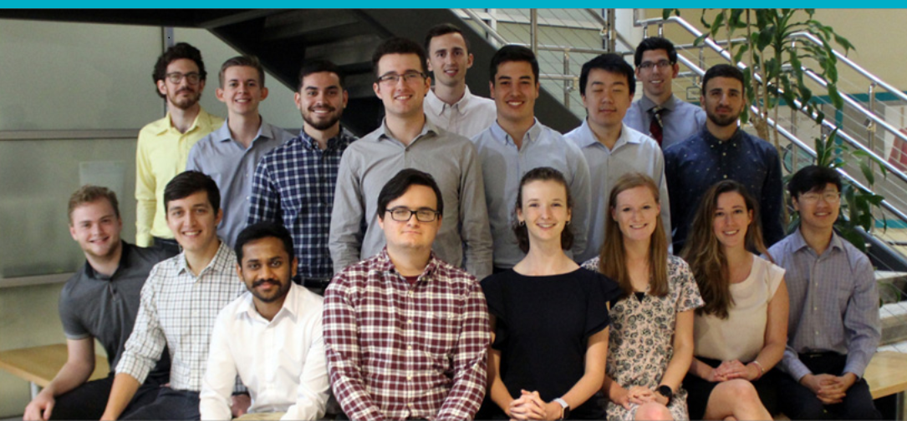

PORTFOLIO
My Projects
To begin my coding career, I started with my high school project I described in my professional image page. The team was split into two main groups, hardware and software. Being a member of the software team, I worked with developing the code that interacts with the user. This meant being able to create successful modules that can be accessed by both the teacher and students. I worked on both user-interface and the data collection for the program.
InvenTeam Link

The next notible project was the website I designed at ERCOT. The goal of this program was to replace hundred of mainly updated pages into a mode-driven web-based application that would dynimally write the webpage's display based upon the information held in the model. The completion of this project saved hundred of man hours while also enhancing accuracy of information being presented with the change of manual updates to a model-driven web application. As the website is for internal use only, I am not able to link the website but here is the presentation I gave to the company following the advancement of my program.
Presentation Link
To learn more about me, check out my LinkedIn profile.
LinkedIn
If you are interested on the project I will complete in the future, here is my GitHub
GitHub
If you would like to see another webpage I created for CSCE 445, the link is attached below!
CSCE 445 Website